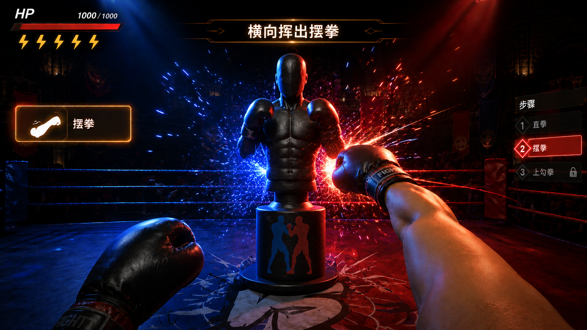
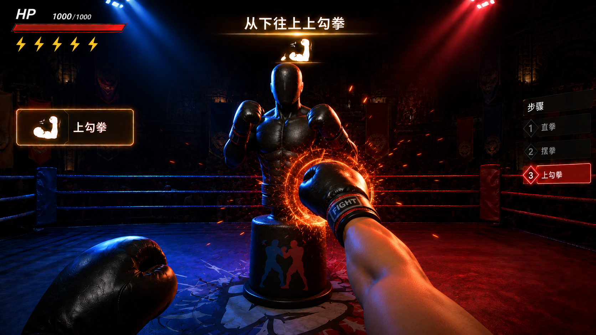
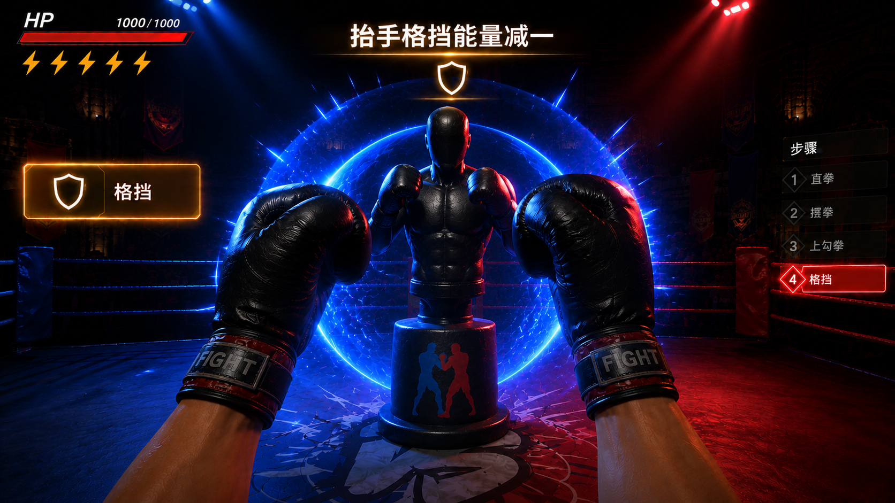
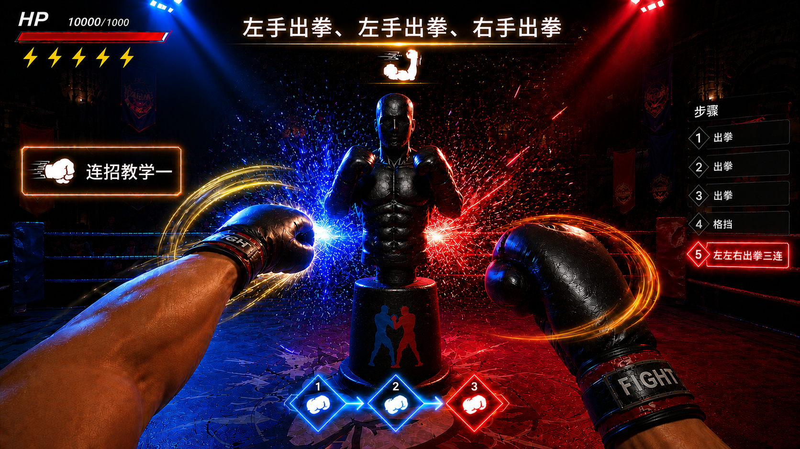
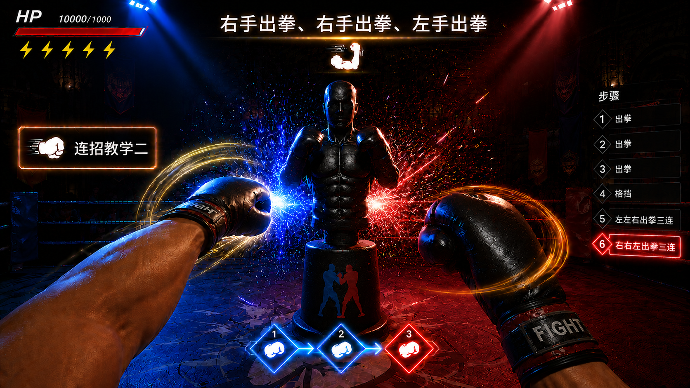

步骤1·场景介绍 参考图
欢迎来到烈焰拳王！你将站在充满火焰特效的擂台上，面对一个训练假人。通过直拳、摆拳、上勾拳和格挡技巧击败对手。注意屏幕顶部的护盾值⚡能量条，合理使用连招恢复能量！准备好了吗？
🔊 语音播报
进入语：烈焰拳王！脚下是燃烧的拳击擂台，对面站着训练假人。直拳、摆拳、上勾拳，还有格挡——四种拳法轮着练。屏幕上面那条金色是护盾值，连招能加回来。双手握紧拳头，摆好战斗姿势，开打！

| 规则 | 说明 |
|---|---|
| 护盾值 ⚡ | HUD 顶部能量条，每次成功格挡消耗 1 点 |
| 连招恢复 | 左左右 / 右右左成功后护盾值 +1。中断或拳法错误不恢复 |
| 得分 | 击中扣血，击倒获胜 |







| 连招 | 第1拳 | 第2拳 | 第3拳 | 拳法 | 标记 | 效果 |
|---|---|---|---|---|---|---|
| 左左右 | 👈左手 | 👈左手 | 👉右手 | 全部出拳 | 蓝→蓝→红 | ⚡ +1 |
| 右右左 | 👉右手 | 👉右手 | 👈左手 | 全部出拳 | 红→红→蓝 | ⚡ +1 |
以下为「烈焰拳王」场景介绍及全局 UI 所需的美术资源清单，供美术团队制作参考。VR 第一人称视角，游戏引擎实时渲染风格，整体追求暗黑 + 火焰 + 拳击的视觉调性。
| 类别 | 资源 | 制作说明 |
|---|---|---|
| 擂台主体 | 方形拳击擂台 | 标准 6×6m 擂台比例，四角立柱包裹海绵护垫（红/蓝双色），四周围绳 3 条（弹性质感的粗绳），擂台地板为帆布纹理，表面微做旧磨损 |
| 擂台背景 | 暗黑竞技场 | 擂台外围为下沉式观众席剪影（不显具体人物），深灰色调，有薄雾/烟雾粒子在观众席上方漂浮；远处高处悬挂四面大型显示屏（比赛时显示比分，热身时可暗屏或显示拳王logo） |
| 灯光 | 聚光灯系统 | 顶部多盏聚光灯投向擂台中央，灯光色温暖白（约 4000K）略带戏剧性；擂台红蓝双角各有一盏彩色射灯（左蓝右红），在地面和假人上形成冷暖对比 |
| 火焰特效 | 围绳火焰粒子 | 沿四条围绳表面有橙红色火焰粒子持续燃烧循环，火焰高度约 15-20cm，带轻微飘动感；火焰颜色从底部橙红过渡到顶部金黄；非实体火焰，为半透明粒子叠加，不遮挡假人 |
| 地面特效 | 欢迎光环 | 假人正下方地面投射一圈金色粒子光环，向外脉冲扩散（类似水波纹，循环），用于引导玩家视线聚焦假人 |
| 类别 | 资源 | 制作说明 |
|---|---|---|
| 训练假人 | 人形训练假人 | 站立式人形假人，高约 1.8m，位于擂台中央距玩家约 1.5m 处。银灰色金属质感外壳，四肢和躯干为分段式结构（肩/肘/腕可动），头部为简约几何造型无明显面部。假人躯干中段偏上位置有一个蓝色发光标记环（对应直拳/摆拳的有效命中区域），中段偏下位置有一个红色发光标记环（对应上勾拳的有效命中区域），标记环为半透明 hologram 投射效果，非贴图。假人头顶显示其血条（HP），被玩家击中时减少 |
| 假人攻击 | 假人出拳动画 | 假人具备主动攻击能力——双臂可模拟出拳动作（直拳/摆拳），出拳前假人身体短暂亮红（0.4 秒预警），然后手臂向前挥出。出拳速度中等（约 0.6 秒完成），给玩家留出格挡反应时间。攻击命中玩家时造成扣血效果 |
| 假人防御 | 假人格挡姿态 | 假人可切换防御姿态——双臂回收护住躯干，此时标记环被遮挡变暗，表示当前为无效攻击窗口。防御姿态持续约 2 秒后切换回暴露姿态。连招教学时假人不设防，标记环全程暴露 |
| 标记环发光 | 蓝/红标记环 | 待机时微脉冲（呼吸灯效果）；该区域被命中时爆闪一次（白色→对应颜色→恢复）；连招模式时按「蓝→蓝→红」或「红→红→蓝」顺序依次闪烁引导；假人进入防御姿态时标记环变暗灰色 |
| 玩家拳头 | 拳击手套（可选） | VR 控制器映射为拳击手套模型（红色或黑色），第一人称视角可见拳套前部；若美术资源紧张可用半透明手部轮廓替代，保留拳头命中判定点提示 |
| 类别 | 资源 | 制作说明 |
|---|---|---|
| 顶部状态条 | 血条 HP + 护盾值 ⚡ | 屏幕顶部横向排列：左侧红色血条（HP），右侧金色能量条（⚡护盾值）。能量条以金色/琥珀色填充，未消耗时满条发光，消耗后变暗灰色，连招回复时有充能动画（金色流光从左到右增加一格）。分隔处用竖线隔开，整体半透明深色底衬 |
| 假人血条 | 假人头顶 HP | 假人头顶上方悬浮一条小型红色血条（约假人肩宽），被玩家击中时血条减少且有伤害数字弹出。血条归零时假人短暂倒地（约 1.5 秒）后重置站起，血条回满 |
| 顶部提示板 | 文字提示板 | 屏幕顶部中央、状态条下方，半透明深色圆角矩形底（80%不透明黑底 + 微弱橙金描边），白色文字居中。进入场景时从上方滑入 + 淡入动画（约 0.5 秒）。文字内容为当前步骤的教学说明 |
| 右侧步骤面板 | 垂直步骤列表 | 屏幕右侧纵向排列，仅当前步骤高亮（橙金发光边框+文字高亮），其余步骤暗隐（灰色低透明度，半透不可读状态）。每步完成时打 ✅ 并消失，下一步自动上移高亮 |
| 命中反馈 | ✅ 确认标记 | 命中判定通过后，屏幕中央出现 ✅ 图标（金色，带粒子消散），伴随白闪 0.6 秒；白闪为全屏白色叠加层从 0% 到 40% 再到 0% 的快闪 |
| 类别 | 资源 | 制作说明 |
|---|---|---|
| 命中火花 | 打击火花粒子 | 拳头命中假人瞬间，碰撞点爆发橙金色火花粒子（类似铁砧打铁），粒子向外飞溅后快速消散（约 0.5 秒），伴随轻微屏幕震动 |
| 假人攻击预警 | 红色脉冲 | 假人准备攻击时，身体短暂亮红脉冲（约 0.4 秒预警），随后手臂挥出。攻击被格挡后红色脉冲消退 |
| 格挡特效 | 护盾脉冲 | 格挡成功时，玩家面前出现一面半透明橙色能量护盾波纹（圆形扩散），持续约 0.3 秒；格挡假人攻击时护盾颜色更深，碰撞特效更明显；同时 HUD 能量条减少 1 格 |
| 连招完成 | 金色庆祝粒子 | 左左右/右右左连招成功后，假人周围爆发金色粒子向上飞散旋绕（类似烟花），持续约 1.5 秒；同时 HUD 能量条播放充能动画 |
| 用途 | 色值参考 | 说明 |
|---|---|---|
| 场景主调 | 暗黑/深灰 #1a1a2e ~ #2d2d44 | 擂台外围、观众席、背景空间 |
| 火焰/能量 | 橙红→金黄 #e67e22 → #f1c40f | 围绳火焰、能量条填充、命中火花、金色庆祝粒子 |
| 左手标记 | 蓝 #3498db / #5dade2 | 假人蓝色标记环、HUD 左手提示 |
| 右手标记 | 红 #e74c3c / #ec7063 | 假人红色标记环、HUD 右手提示、假人攻击预警亮红 |
| UI 底色 | 半透明黑 rgba(0,0,0,0.8) | 提示板、步骤面板底衬 |
| UI 高亮 | 橙金 #e67e22 发光 | 当前步骤边框、能量条填充 |
VR 第一人称视角 + 游戏引擎实时渲染；视觉基调类似《Creed: Rise to Glory》的擂台氛围 + 赛博朋克轻量级 UI 叠层；火焰特效克制不浮夸，服务于功能引导而非纯装饰；核心设计原则：所有视觉效果必须服务于信息传达和操作引导，不分散玩家注意力。